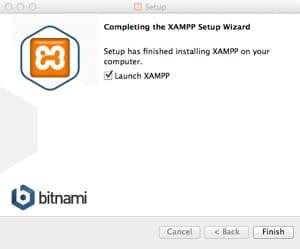
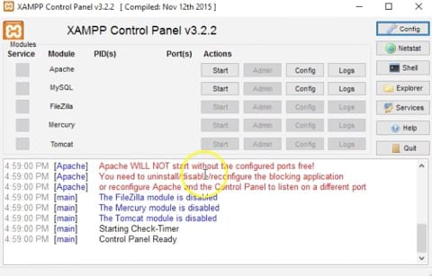
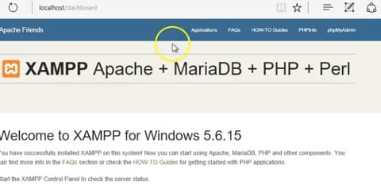

XAMPP for Windows
Introduction
An ideal situation for web development is to have a local environment for development and testing and a remote production environment for distributing your work to the rest of the world. To create a local environment requires the installation of server software on your own machine. For web development using PHP, this is known as an "AMP" (Apache, MySQL and PHP) stack. This software bundle gives your machine many of the same capabilities as a dedicated server. On Windows, the current bundle discussed in this tutorial is XAMPP (Apache, MariaDB, PHP and PERL) for Windows.
Download
Using your web browser go to apachefriends.org. Once there, find and download the stable version of XAMPP shown on the home page (5.6.19 as of April 2016) version for Windows (Do NOT install the PHP 7.0 version). Save the installation file to your machine.
Installation
- Locate and launch the downloaded installation file on your computer.
- If presented with the security warning(s) asking if it is OK for the software to change your PC?, proceed by clicking "Yes".
- You will also be warned about your User Account Control not allowing for installation to the Program Files. Click "OK".
- When the install begins you will shown a list of software to install. Leave only the following checkboxes checked:
- Apache
- MySQL
- PHP
- phpMyAdmin
- Clear all other checkboxes!
- On the following screen make sure the installation folder is located at "C:\xampp"
- On the following screen, turn off the checkbox asking if you want to learn more about XAMPP on Bitnami, then click "Next".
- Finally click "Next" until the installation finishes, then click "Finish".

- If the installation finished successfully XAMPP should start automatically and launch the control panel.

Starting Apache and the Database servers
- The control panel has buttons for both Apache and MySQL (the database server).
- Apache should start automatically. If it does not, consult the Troubleshooting section.
- To manually start either of these servers, simply click the "Start" button on the respective row.
- When the process starts the text background will turn green and the port numbers will appear.
- When the Apache server is running, click the "Admin" button and a browser window should open showing the localhost (your computer) start page.
- If you see the start page, the server is installed and running as it should.

Troubleshooting
Apache Will Not Start
- Normally the Apache server should start without issues.
- However, if it will not start it is typically because another web server is already running and will have to be stopped.
- Launch the Windows Task Manager (Control + Alt + Delete keys held down together).
- Click the Task Manager link.
- In the Task Manager, click the "Processess" tab and look in the "Background Processes" list.
- If you see an "Apache HTTP Server" in the list click it, then click the "End Task" button until that process disappears.
- When it is removed from the list, return to the XAMPP Control Panel and click the "Start" button for Apache.
- It should start and the background for the Apache text should turn green.
Changing the SSL Port
- If you receive an error that Apache cannot start because Port 443 is in use by another program, click the "Config" button next to Apache. Find and open the Apache (httpd-ssl.conf) option. Then find where Port 443 is specified and change the Port to 444, save and close the file. Then try starting Apache again.
- Once the Apache text appears with a green background, the server has successfully started.
The Site Root
Every web server has a "root" or a folder that holds all of the assets of the web site. In XAMPP that folder is found in C: drive > xampp > htdocs. Please locate it now.
By default, it already has files and folders in it, do not delete anything until you know what they do. You will add your own files to this folder as you build your own site locally before sending it to your production server (purchased hosting) for everyone in the world to see. The name of the root on the web hosting server will probably not be "htdocs", but it will be important to know what it is, because we will use it in other ways. The name of the remote root folder should be part of the information sent to you by your hosting company when you purchased your hosting.
Running and Stopping XAMPP
Running servers on your local machine is a useful tool, but one that can potentially use much of your computer's resources. Therefore, it is important to start XAMPP only when you are developing and testing using PHP and shut it down when finished.
Starting XAMPP
Launch XAMPP from your applications list. Then click the Apache and MySQL servers and "Start" for each.
Stopping XAMPP
When shutting down, be sure to stop any servers that are running my clicking the "Stop" button next to each one that is green. Then quit XAMPP. If you quit XAMPP before stopping the servers they may continue to run in the background.